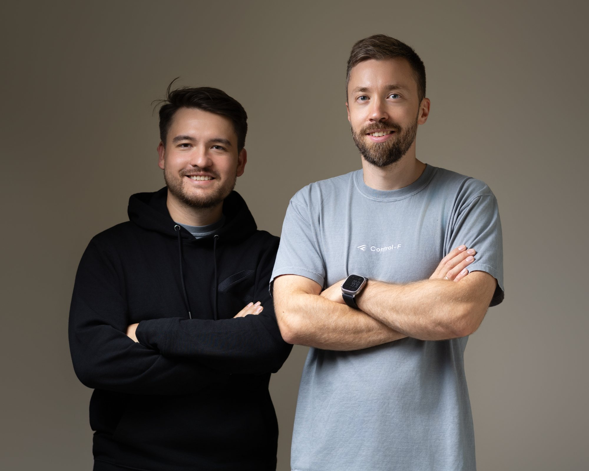
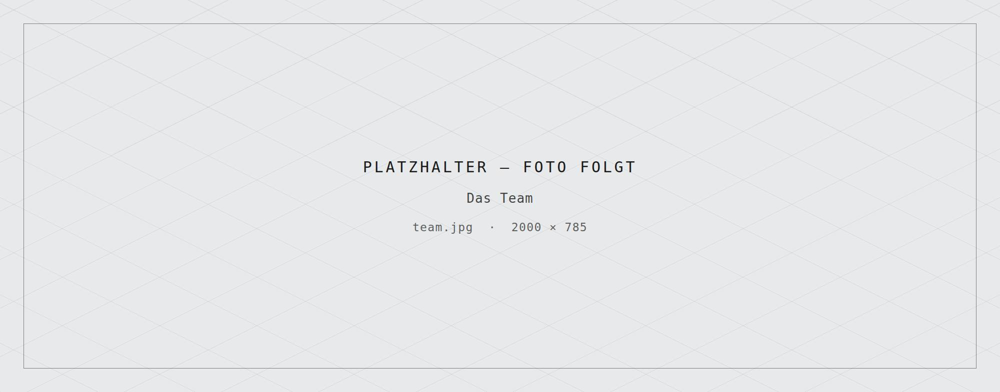
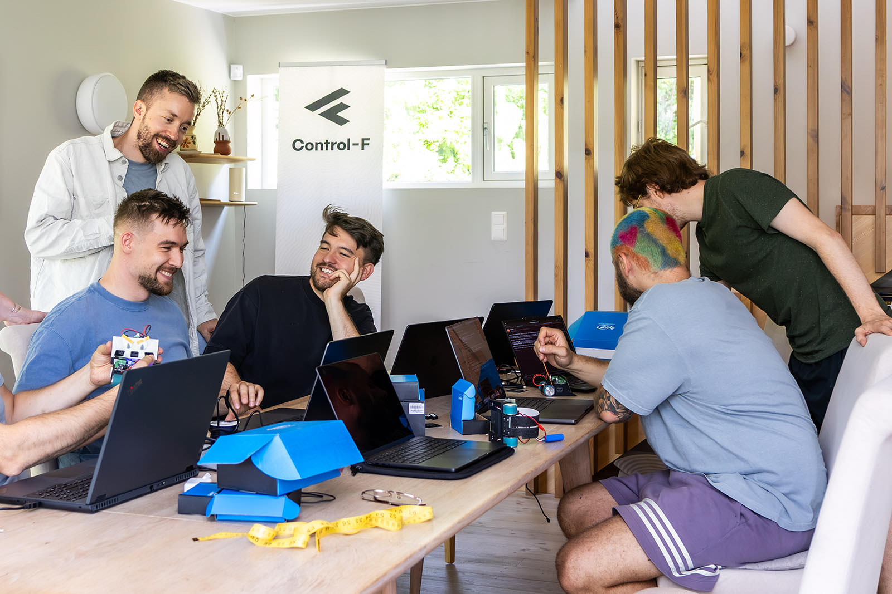
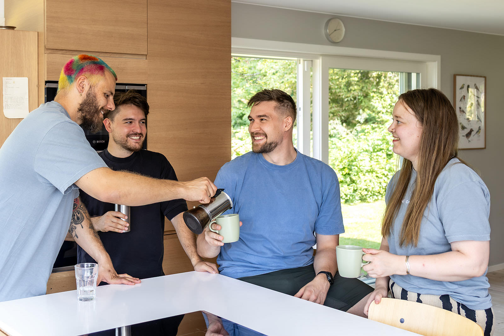
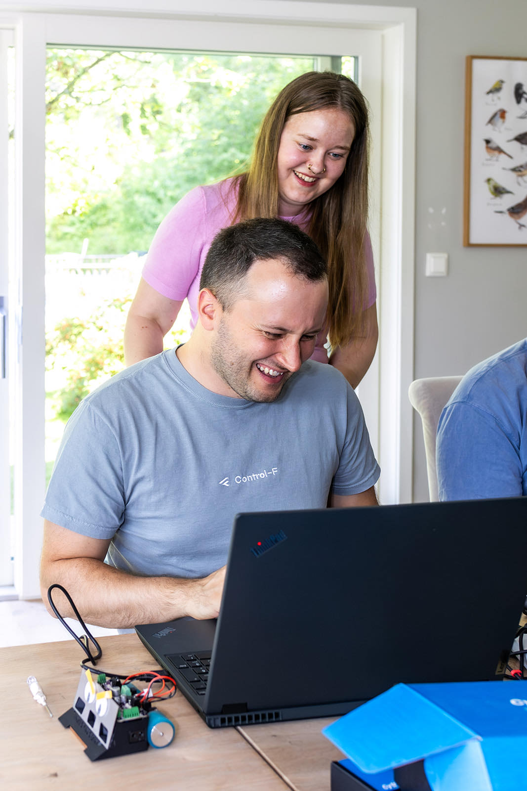

About us
Who we are
01 / Management
Daniel Tremer and Simon Deussen
We founded Control-F because data from the plant has to add up. We build on it ourselves — from the first measurement to the key figure in running operation.

02 / The team
And the whole team
Experts in data, software and plant engineering. We build ourselves, we work as equals, and we stay until the numbers hold in operation.

-
As genuine data nerds we have been building big data platforms for industrial telemetry data since 2022.
We are a data boutique from Konstanz for the DACH region. Small enough to be agile. Experienced enough to know what works. There is no stiff consulting here.
We are not a hype shop but a small team of experts who love engineering and work together as equals.
-
We manage solutions, not only projects.
We build code instead of PowerPoints.
We have respect for every person and no fear of complex problems.
-
Remote-first with full flexibility. Ownership instead of micromanagement. Team spirit instead of elbows. Everyone on the team can genuinely move something. Every good idea counts.
Our team of data engineers and AI specialists commands the architecture of complex data systems – and makes sure it works, so that standstill is no longer an option for you.
Our values
6-
Clarity and a focus on results
We deliver clarity and measurable results, without detours, without distractions. Success for us means impact in the business, not effort in the process.
-
Ownership and adaptability
We rely on ownership and flexibility. Instead of rigid rules we trust the initiative and adaptability of our team.
-
Technical command and critical AI
We command our tools, and we question them. We use AI where it creates real value: critically examined, rather than blindly trusted.
-
Pragmatism and speed
We aim for elegant, fast solutions and avoid unnecessary complexity. What counts is the effect, not the show.
-
Transparency and open communication
We communicate openly and honestly, internally and with our clients. Clear words build trust and prevent misunderstandings.
-
Learning and development
We are convinced that learning is never finished. We keep developing, we keep training, and we actively look for new perspectives, as a team and as individuals.
How we work
4 glimpses-

Remote-first — and still often at the same table
Whoever wants to work from home works from home. All the same, there is a long table at the Seerhein where the whole team sits down regularly: laptop beside laptop, cables across the top, every question within earshot.
-
We put our hands on the hardware we talk about
Telemetry data does not begin in the data warehouse, it begins at the sensor. That is why there are boards, meters and tape lying between the laptops. Anyone designing a pipeline here has seen what hangs on the other end of it first.
-

The coffee break is part of the work
The kitchen is the second meeting room. A good deal of what would otherwise have needed a calendar slot is settled there in ten minutes — over a pot of coffee and with no agenda.
-

Two people at one screen is not an hour lost
Here you pull someone in rather than grinding through it alone — and it makes no difference who has been around longer. Questions cost minutes, wrong assumptions cost weeks.
The team
-
Simon Deussen
Founder & Managing Partner
Simon founded control-f and runs it as Managing Partner and Lead Data Architect. A B.Sc. in media informatics at the Hochschule der Medien Stuttgart, with a bachelor thesis written at Daimler TSS on converting screen designs into HTML and CSS with deep learning, was followed by three years at inovex, first as a machine learning engineer and then, alongside a master's in autonomous systems at the Hochschule Bonn-Rhein-Sieg, in data management and analytics. That is the ground control-f is built on: turning disordered company data into decisions that can be trusted, predictive maintenance that catches plant and machine failures before they happen, and data pipelines that still run two years after handover. Pragmatic solutions rather than AI that stays in the slide deck.
-
Daniel Tremer
Managing Partner
Daniel joined control-f as Managing Partner, bringing over a decade of experience in data science and machine learning to the company's work with industrial enterprise clients. His background includes several years in the automotive industry across research and development, IT, and infrastructure roles, as well as running his own AI and data analytics practice before joining control-f. His interests span the full spectrum of applied AI, from large language models and generative systems to production data engineering, and he leads control-f's work building practical, cutting-edge AI solutions for enterprise clients.
-
Piet Brömmel
Data Engineer
Piet brings computer vision and applied machine learning to control-f's data engineering work. A bachelor's in mathematics and computer science at the Bergische Universität Wuppertal, with a thesis on modelling natural images with deep neural networks, was followed by a master's in computer science at the TU Dortmund on on-device robot localisation through representation learning. From early in that master's onward came nearly five years at the Fraunhofer Institute for Material Flow and Logistics in Dortmund, where the work ran from the structuring and storage of large datasets and an AI system for precise robot positioning to, as a data scientist, an end-to-end pipeline for training and deploying computer vision models, including models on edge AI hardware for real-time inference in hospital environments. Generative AI, document understanding and large language models are the current interests, on a Python toolchain with PyTorch, TensorFlow, JAX, Docker, MLflow and GCP.
-
Henry Beiker
Data Engineer
Henry brings software development and AI testing to control-f's data engineering work. A B.Sc. and then a master's in computer science at the Humboldt-Universität zu Berlin ran alongside three and a half years of development work. At Howto Health that has meant leading software and data engineering projects, APIs for data processing and integration, and an in-house task planning tool built against requirements taken straight from clients. In a research team at Fraunhofer FOKUS it has meant a simulation environment in Unreal Engine for testing object detection models, a test framework for autonomous robots on train tracks, and the evaluation workflows around both. That is the same question the master's thesis takes up, improving object detection by simulating the scenarios that provoke false negatives. The stack is Python, SQL and JavaScript with Django, FastAPI and Flask, React in front and PostgreSQL underneath.
-
Robin Marzucca
Data Engineer
Robin brings a background in theoretical particle physics to control-f's data engineering work. He completed his PhD in quantum field theory and spent several years as a postdoctoral researcher at the University of Zurich's Physik-Institut, working on scattering amplitudes and precision calculations in quantum field theory, alongside earlier research stints at UCLouvain and Durham University's Institute for Particle Physics Phenomenology.
-

Marie Ernø-Møller
Data Engineer
Marie brings a background in theoretical physics to control-f's data engineering work. An MSc in quantum physics from the University of Copenhagen, with a thesis on double-copy amplitudes and their applications in general relativity, led to gravitational-wave research at Humboldt-Universität zu Berlin, where quantum field theory and effective field theory methods were applied to black hole mergers. That research training now sits alongside a deliberate move into machine learning and full-stack engineering: an MLOps bootcamp, containerised data pipelines built with Airflow, MLflow, Grafana and Prometheus, backend work in FastAPI and PostgreSQL, and a self-built mobile application whose emphasis is relational schema design and time-series metrics.
-

Birk Burghardt
Data Engineer
Birk brings a computer science background and several years of applied data science to control-f's data engineering work. After a B.Sc. in computer science at Humboldt-Universität zu Berlin, including contract work for the university's Digital History group on web scraping and the image classification of heraldic material, the path led through predictive modelling on laboratory diagnostics data at a digital health company to a Data Science Expert role at Lyreco Deutschland. There the work covered Power BI data models and reporting, ETL processes and workflow automation in Python, and machine learning pipelines for churn analysis, customer lifetime value and cross-selling, alongside the backend of an internal assortment platform.